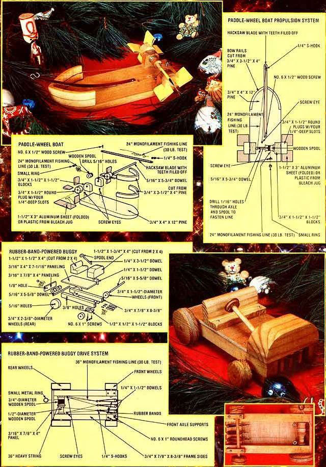
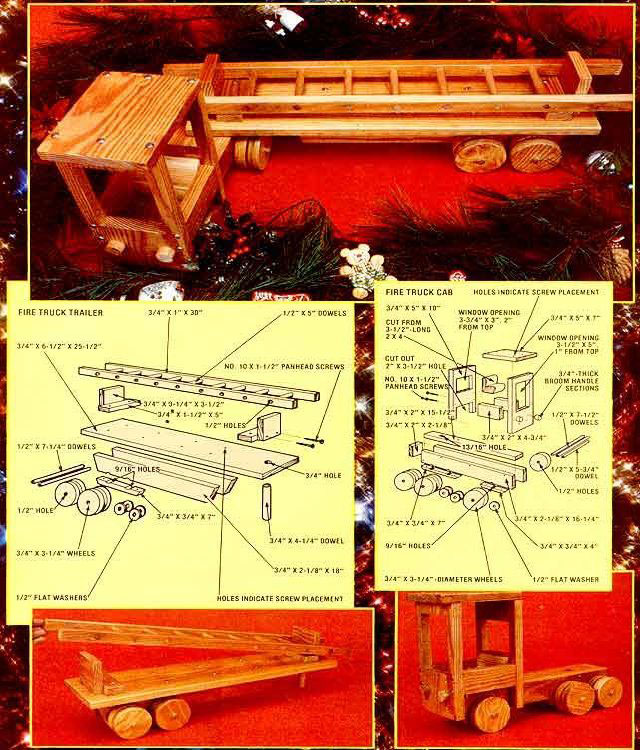

The excitement and spirit of Christmas is always the same-especially for the children among us-but many of the toys available nowadays leave much to be desired. If you're among the folks who're tired of "modern", expensive, plastic, break-the-first-time-they'reused playthings ... check out these wooden toys built by MOTHER's clever researchers. We think the easy-to-construct designs will allow just about anybody-regardless of how many thumbs he or she may have to put together some sturdy gifts for the tiny folk.
For your first project, try building your own riverboat. Take a 3/4" X 4" X 12" piece of pine stock and cut a rounded "bow" (as illustrated) on one end of it. Then, trim two more scraps of pine to 3/4" X 31/2" X 4" and trace out the profile of your newly formed bow on each of these (making the lines of the curve about 1/2" thick) . . . cut the wooden arcs out . . . and fasten 'em (using waterproof glue) first to each other and then to the bow of the ship, as illustrated.
Next drill 5/16" holes through two pieces of 3/4" X 1-1/2" X 1-1/2" stock . . . round the boards' upper corners . . . and glue the blocks to the rear of the boat as shown in the illustration. File the teeth off a hacksaw blade and fasten it to the deck of the ship (with a No. 6 X 1/2" wood screw) about 4 inches from the stern . . . then slip a 5-3/4" length of 5/16" wooden dowel through one of the 3/4" X 1-1/2" X 1-1/2" dowel supports, through a wooden spool, and then into the 5/16" hole in the other dowel support. Check for free rotation, and-if the dowel binds as it moves -take the stick out again and enlarge the two holes in the supports. The spool, however, must be tight on the dowel. If it's not secure, fasten it in place with waterproof glue.
The toy's paddle wheels are made of two 3/4"-wide, 1-1/2"-diameter plugs . . . each with a 5/16" hole bored in its center. Cut four 1/4"-deep slots into each plug at equal points around the circumference-then fold eight 1-1/2" X 3" aluminum sheets (or use 1-1/2" X 1-1/2" squares cut from old plastic bleach bottles) and force them into the slots to serve as paddles. Now press the plugand-paddle assemblies onto each end of the 5/16" dowel and test them for tightness (again, glue them if necessary).
Next, take two screw eyes and insert one into the boat at a point directly behind the spool, and the other halfway between the spool and the hacksaw blade. Then drill a 1/16" hole through the center of the spool and dowel . . . tie a 24" length of 30-pound-test monofilament fishing line through it, wind the line onto the spool, and slip the free end of the line through the screw eye behind the spool. Attach a metal ring to prevent the string from pulling through the hole.
With this done, drill another 1/16" bore through the dowel itself, and tie a second 24" length of cord securely through the hole. Now fasten a 1/4" S-hook to.the front of the hacksaw blade . . . then pass the string through the hook and bring it on back to the other screw eye in front of the spool. Pull the cord so that the blade is bent slightly, then tie the line to the eye and trim any excess. When you pull on the ring at the stern of the ship, this second line will wrap up on the dowel and bend the hacksaw blade in half. Release the ring, and the force of the blade's return to the straight position will make the paddle wheels spin!
Here's a real bruiser of a toy that can take unbelievable amounts of child-inflicted punishment without breaking . . . and it's big enough to hold just about any li'l shaver we can think of! (In fact, according to Richard C. Redmond of Auburn, New York-who built such a truck for his grandson before sending the plans to our offices so MOTHER could try 'em out-"The youngster couldn't break it with a hammer! " )
Now we hope that not everyone's toys will have to go through that kind of torture test, but it's good to know that the truck is designed to last.
Start constructing the fire engine's cab section by scrounging up two pieces of 3/4" X 2-1/8" X 16-1/4" wood (which will become the frame side rails), then cutting a 3/4" X 2" X 15-1/2" piece (this'll be the frame top) and a 3/4" X 2" X 2-1/8" block (it'll become the frame end). Fasten all these together with No. 10 X 1-1/2" panhead screws (using the screw placement indications in the illustration as guides), then drill a 13/16" hole-at a position 3-1/2 inches forward of the "boxed" end of the frame-to hold the trailer hitch peg.
To make your fire truck's wheels, cut ten 3-1/4"diameter discs out of a piece of 3/4"-thick lumber, then drill a 1/2" hole in the center of each one. Next, make four axle supports as illustrated-two 3/4" X 3/4" X 4", and two 3/4" X 3/4" X 7"-angle their edges slightly, and screw them to the bottom of the frame side rails at both the front and the rear of the truck (the front supports should be set back 1/2 inch from the leading edge of the frame).
Now drill a total of six 9/16" axle holes, centered on the joint between the frame and the axle supports . . . the front ones 2-1/2 inches back from the forward edge of the frame, the leading rear pair 8-1/2 inches behind that, and the trailing rear set 3-1/2 inches behind the bores in front of them. Then slip a 1/2" X 5-3/4" dowel through the forward axle holes, and two 1/2" X 7-1/2" dowels through the hind axle holes. Put a 1/2" steel flat washer on the protruding end of each aft axle, push on a wheel and another 1/2" flat washer . . . then glue on the outside wheel. Up front, just slip a 1/2" flat washer on each end of the dowel and glue one wheel in place on each side.
Make the body of the cab by cutting two pieces of 3/4"-thick wood to 5" X 10" . . . another to 5" X 7" . . . and two more to 2" X 4-3/4". Cut a 3-1/2" X 5" windshield opening-1 inch from the top of one of the 3/4" X 5" X 10" pieces-and a rear window opening (measuring 3" X 3-3/4") 2 inches from the top of the other 3/4" X 5" X 10" piece. You'll also have to remove a 2" X 3-1/2" block-as illustrated-at the lower end of this rear section . . . so the cab can fit over the frame.
Fashion a seat out of a 3-1/2" length of 2 X 4, as shown in the accompanying drawing, then put the truck cab together with No. 10 X 1-1/2" pan screws. Now you can fasten the cab to the frame with two screws through the front and one-at the rear-from underneath . . . and glue the seat to the back of the cab and the frame. (As an added touch, cut off two 3/4" sections of broom handle and glue them to the front of the cab as headlights.)
The trailer of the fire truck uses a 3/4" X 6-1/2" X 25-1/2" section of wood for its bed, while two 3/4" X 2-1/8" X 18" lengths of wood serve as the frame rails. Angle the ends of each of the latter planks slightly, then screw the boards to the underside of the bed . . . 2-3/4 inches apart (measured center-tocenter) and 1 inch forward of the bed's rear. Next, attach the two 3/4" X 3/4" X 7" axle supports to the frame rails (angle the ends of these also) so that the edges of both the rails are flush with the supports at the rear.
Now drill the four 9/16" holes to accommodate the axles (leave 3-1/2 inches between the axles to be sure that the two sets of wheels won't touch) and push 1/2' X 7-1/4" dowels through the axle holes. Cut out four more 3/4" X 3-1/4"-diameter discs for wheels, then slide 1/2" flat steel washers over each dowel as you did when assembling the cab's wheels. Push the inner discs on . . . slip another set of washers in place . . . and glue the outside wheels in position. (Leave enough sideways play in the axles for the wheels to spin freely.)
You can make a hitch for the trailer by drilling a 3/4" hole into the bottom of the bed . . . at a point 1-1/2 inches behind its leading edge and directly in the center of the board. Glue a 3/4" X 4-1/4" dowel in the hole, and check for fit with the tractor part of the truck.
On the fire engine's topside, the ladder is held fast by a support at each end of the bed. Make these two braces by fastening one 3/4" X 1-1/2" X 5" scrap of wood in place, 2-3/4 inches (measured from the supporting board's center) behind the front edge of the bed . . . and another 2-1/2 inches forward of the rear of the bed. Next, attach two 3/4" X 3-1/4" X 3-1/2" vertical supports-one to the front of the forward block, and the other to the back of the rear block-to hold the ladder in place.
Construct the ladder by taking two 3/4" X 1" X 30" lengths of wood and drilling nine 1/2" holes through each piece . . . spaced at 3-inch intervals measured from center to center. Join the two halves of the ladder with nine 1/2" X 6" dowels, glued in place and fitted flush with the outside edges of the holes.
Finally, give all the wooden parts a light sanding and finish the whole truck with a coat or two of polyurethane.
Not only is this "snappy" little car selfpropelled, but it has a "three-speed transmission" to boot! You can begin making the sporty speedster by cutting out a couple of pieces of lumber measuring 3/4" X 7/8" X 8-3/8". Then trim a 4" length of 2 X 4 down to 1-1/2" X 1-3/4" X 4" . . . to make the hood and dashboard assembly shown in the illustrations.
Now round the two end corners on one 1-1/2" X 4" side-as shown-and drill three 1/4" holes (in line, 3/4" apart and 1/2" deep) on the other 1-1/2" X 4" side . . . with the center hole 1/4" back from the leading .edge and halfway between the two ends. While you're drilling, make another 1/4" hole-1/2" deepinto the "dashboard" side of the wooden block . . . bored at a 46° angle to hold the steering wheel in place (position the hole about 1 inch in from the rounded corner on the dashboard).
Next, cut four lengths of 1/4" dowelthree 1-1/2" long and one 3-1/2" long-and glue the shorter "sticks" into the three holes near the leading edge of the hood, and the longer one into the angled hole on the dashboard side of the block. Then drill a 3/8" hole-centered and 3/4 inch in from one end-through the 7/8"wide surface of each of the 3/4" X 7/8" X 8-3/8" lengths of wood (these bores will accommodate the rear axle), and then thread one small screw eye into the wood at a point 3/4 inch forward of each of these two holes. . . as guides for the drive system's strings.
Now-using glue and four 1-1/2" finishing nails-attach the "hood and dashboard" assembly to the undrilled ends of the 8-3/8" long pieces of wood . . . so that the front of the hood is flush with the ends of the boards. (Hint: Drive the nails through the "frame" of the car from the bottom, then into the "hood and dashboard" assembly.)
With the basic frame completed, you can now make the front axle- supports by sawing out two 1/2" X 1/2" X 1-1/2" blocks of scrap, and drilling a 3/8"-diameter notch in each one, as illustrated. Fasten these up front (with the holes, of course, lined up across from each other) onto the bottom of the car's 8-3/8"-long, "frame rails", using four No. 6 X 1" roundhead wood screws . . . one at each end of the two axle supports.
The axles are two 5-5/8" lengths of 5/16" dowel, and the wheels are cut from 3/4" board: 2-3/8"-diameter discs for the rear, and 1-1/2"diameter circles for the front (each of the four wheels should have a 5/16" axle hole drilled in its center). Slip the front axle through the holes in its supports and glue the 1-1/2"diameter wheels to each axle end. Then, find yourself two spools with 5/16"-diameter holes (one with a drum diameter of 1/2" and the other of about, but no larger than, 3/4"), and hold them in place between the frame rails at the rear of the car with one hand while-with the other-you push the axle through its support holes and the two spools (until the ends of the axle protrude evenly on both sides).
Now it's a simple matter to drill one 1/16" hole through the center of each spool and through the axle within it . . . and just as easy to tie one end of a 36" length of tough string through the hole in the larger spool, and roll most of it up on the "drum" (with about 2" left over). And, while you're tying, you can push one end of a 36" length of 30-pound-test monofilament fishing line through the hole in the smaller spool and fasten it in the same way. Then glue each of the 2-3/8"-diameter wheels to its end of the axle, and you're ready to rig up the rubber band drive system.
To do this, turn the buggy upside down, then scare up a dozen (or so) long, thick rubber bands. Now get yourself three small S-hooks . . . put the ends of two or three of the bands into one of the hooks . . . wrap them around the first peg at the front of the car (directly opposite the smaller spool) . . . bring 'em back to the hook . . . and loop their free ends onto the "S", too. Next, take the fishing line and pass it through the "open" end of the hook, then thread it through the screw eye right in front of the small spool. Now, loop another rubberband-and-hook assembly over the middle peg . . . string your line through that . . . pass it through the remaining screw eye (in front of the large spool) . . . hook it through a last rubber band and "S" arrangement on the final peg . . . and tie it to the shank of the "large-spool side" screw eye. (Be sure to draw the line up snuglyso there's no slack-before you tie it off. )
After this, simply scrounge up a 4" X 8" piece of 3/16" paneling board and cut a 7/8" X 4" section off the end of it . . . tack the remaining piece (now about 7-1/16" long) on top of the "frame" rails with some small brads . . . drill a 1/16" hole in the 3/16" X 7/8" X 4" piece (so it's directly behind the large spool when the board is placed at the end of the "frame") . . . and-after you've threaded the string through the hole and tied a small ring onto the end of ittack this piece in place.
For the finishing touches, fashion a small seat out of a chunk of 2 X 4 so it measures 1-1/2" X 1-1/2" X 4" (but with enough wood cut out to actually form the bottom and back of the seat) and screw this piece securely to the top of the 3/16" X 4" X 7-1/16" board and the frame rails below it . . . using No. 6 X 1" roundhead screws. (Position the seat just behind the "steering wheel" . . . which you can now makeout of the end of a spool-and glue to the steering column.)
Now you're ready to go . . . just hold the car in one hand and pull the ring at its hind end until there's no more string left to pull. Then put the car down and let 'er rip! She'll take off like a scared rabbit. In fact, it'd help to wrap some small rubber bands around the wheels to prevent them from losing traction . . . and you might also notice (as we did) that you can improve the car's acceleration by using stouter rubber bands on the first two pegs, since these are the car's "first" and "second" gears.
|
 |
 |
|